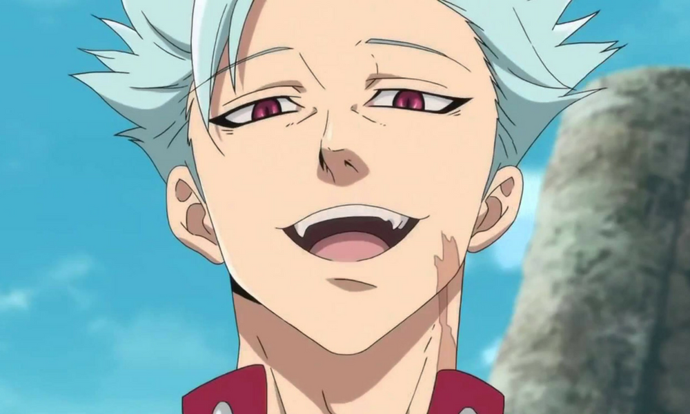
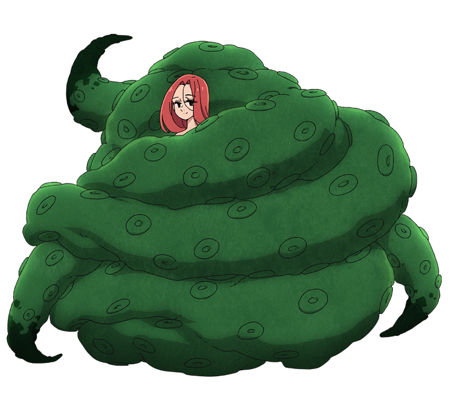
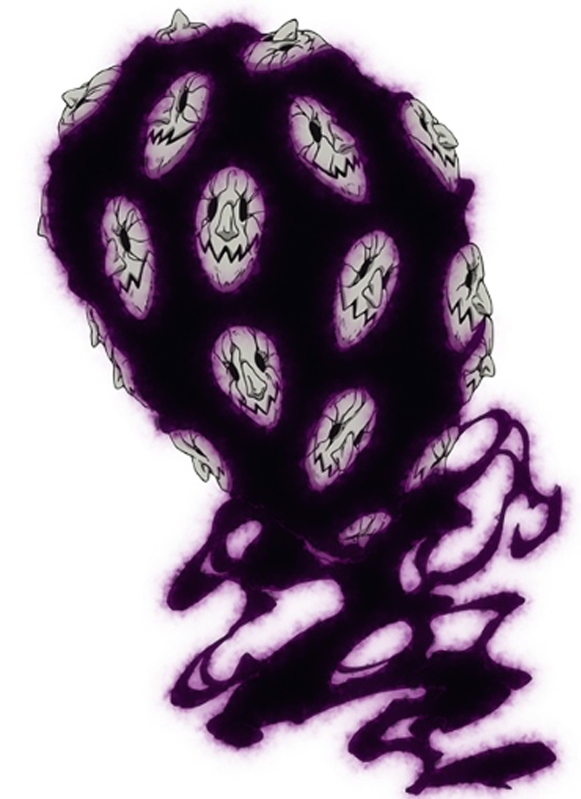

| Nome | Foto | Descrição |
|---|---|---|
| Meliodas (Ira) | O capitão dos Sete Pecados Capitais. O pecado capital da Ira do Dragão, e o pecado mais forte. Ele foi inspirado no Rei Meliodas na lendas Arturianas que foi famoso por ser o dono do bar Chapéu de Javali, conhecido por sua excelente bebida e horrível comida (cozida por Meliodas no começo e posteriormente por Ban). Apesar de parecer uma criança, ele é extremamente poderoso e muito mais velho do que parece já que ele tem mais de 3000 anos. Mesmo sendo conhecido como pecado da Ira, ele raramente fica bravo e é muito brincalhão, pervertido, confiante e gentil com aqueles com que se importa. Porém, faz parte do clã dos demônios, aonde já foi: próximo rei demônio e líder dos Dez Mandamentos, sendo irmão de Estarossa (Arcanjo Mael) e Zeldris (executor do rei demônio), sendo os dois dos dez mandamentos. Sem contar sua popularidade como o demônio amaldiçoado. O motivo de seu titulo como pecado da ira é que, por uma questão de raiva com o um mandamento, destruiu a cidade de Danafor. Seu tesouro sagrado é Lostvayne. | |
| Ban (Ganância) |  | O pecado capital da Ganância da Raposa. Também conhecido como Ban, o Imortal. Ban é um homem alto, magro mas com músculos definidos graças ao seu poder de caçada da raposa. Ele é baseado no rei Ban nas lendas Arturianas que é famoso por ser o pai de Lancelot. Ele é agressivo em suas lutas, porém descontraído fora delas, além de ser um exímio cozinheiro e aparentar se preocupar apenas com Meliodas e os outros pecados acima de seus próprios interesses, com exceção da sua amada Elaine, por quem ele faria qualquer coisa para tê-la em seus braços. Apesar de ser o pecado da ganância, ele tem um coração profundamente carinhoso e teme perder aqueles com quem se importa. Ele também aparenta ser masoquista (diante de sua imortalidade, a dor física parece não incomoda-lo) e adora desafios. Seu tesouro sagrado é Courechouse e está perdido (roubado). |
| Escanor (Orgulho) | O pecado capital do Orgulho do Leão. Sua força e personalidade variam de acordo com a hora do dia, com o seu poder sendo imenso e sua personalidade arrogante e orgulhoso durante o dia, mas se tornando frágil e submisso a noite. Recentemente foi descoberto que Escanor possui a ''Graça'' (poder concedido pela Divindade Suprema aos Quatro Arcanjos) que era poder do Irmão de Ludociel, ''Mael'', o arcanjo mais forte de todos, que foi morto na guerra santa por Estarossa, irmão de Meliodas, e teve sua graça passada ao Escanor. Ele demonstra ter sentimentos por Merlin. Uma curiosidade é que Suzuki Nakaba (criador da obra) descreveu o poder de Escanor como imensurável no Fanbook número 2 (holy of sins, 2016). Escanor é o único personagem com o poder descrito de tal forma. Seu tesouro sagrado é Rhitta. | |
| Gowther (Luxúria) | O pecado capital da Luxúria da Cabra. Ele é baseado no rei Sir Gowther nas lendas Arturianas que e famoso por ser meio-irmão de Merlin. Não se sabe ao certo as origens de Gowther, mas ele é incapaz de ter sentimentos ou emoções, além de não entender muito sobre interações sociais, mas faz o seu melhor para tentar entendê-las, passando muito de seu tempo com leituras. Ele é observador, indiferente e extremamente lógico. Ele é conhecido por afirmar factos observados ou óbvios sem considerar os sentimentos dos outros. Apesar de tudo, aparenta ser bastante fiel para/com Meliodas. Sem contar que é um dos antigos Dez Mandamentos, ainda mais, é apenas um fantoche criado por Gowther, um demônio banido pelo rei demônio. Seu titulo de pecado da luxuria vem pelo motivo de ser acusado de estuprar a irmã do rei de Liones e depois mata-la, mas eles eram amantes e ela apresentava uma doença cardíaca. Seu tesouro sagrado é Herritt. | |
| Merlin (Gula) | O pecado capital da Gula do Javali. Merlin é conhecida como a maior feiticeira em toda a Britânia. Merlin aparenta ter um caráter lúdico. Ela gosta de zombar e de desafiar os outros e se mostra bastante sábia em suas palavras. Merlin é uma mulher relativamente alta, com aparência "pecaminosa" e com uma personalidade sapiente. Merlin ao nascer, foi descoberto que ela possuía um poder imenso, o ''Infinity'', Por causa disso recebeu as bençãos do Rei Demônio e da Divindade Suprema, eles concederam a ela sabedoria sobre conhecimentos jamais descobertos pela humanidade e nenhuma outra raça, além de proteções divinas a qualquer mal. O personagem é baseado no feiticeiro Merlin nas lendas Arturianas. O titulo de pecado da gula é dado porque Merlin sempre quer ter mais e mais poder e conhecimento. Seu tesouro sagrado é Aldan. | |
| Diane (Inveja) | O pecado capital da inveja da Serpente. Faz parte do clã de gigantes, possui um enorme poder físico e uma conexão profunda com a terra. Ela é confiante, pavio curto e fará qualquer coisa para proteger uma vida inocente. Ela é apaixonada pelo Capitão, Meliodas, e sente ciúme de qualquer mulher que mostra interesse por ele. Ela se torna a melhor amiga de Elizabeth, mas sente inveja da afeição do Capitão por Elizabeth em vez dela. Seu titulo de pecado da inveja vem pelo motivo de, por questão de inveja, matou a gigante Matrona, mas na verdade foi um grupo de bárbaros. Mais tarde (na segunda temporada), King transforma-se no grande amor da gigante, e o mesmo também ama reciprocamente ela, alem de protege-la a todo custo. Seu tesouro sagrado é Gideon. | |
| King/Harlequin (Preguiça) | O pecado capital da preguiça do Urso. Seu verdadeiro nome é Harlequin e ele é o terceiro Rei das Fadas e protetor da Floresta das Fadas e da Fonte da Juventude em seu interior. King é gentil, empático, respeitoso, mas feroz quando necessário. King, assim como Meliodas, aparenta ser uma criança, porém esta é uma característica das fadas e não se sabe ao certo mas, as fadas assim como King, podem se transformar instantaneamente em um "humano mais adulto". Ele é "secretamente" apaixonado por Diane. O motivo de seu titulo de pecado da preguiça é pelo motivo que por ter muita preguiça, não impediu uma chacina de uma cidade perto dele, mas na verdade, só chegou atrasado. Quando precisa defender quem ama, King libera um poder incrível. Seu tesouro sagrado é Chastiefol. |
| Nome | Foto | Descrição |
|---|---|---|
| Elizabeth Liones | Terceira princesa do Reino de Liones, sendo a caçula dentre as irmãs Margaret e Verônica. Foi baseada na esposa de Meliodas nas lendas Arturianas. Elizabeth é uma educada e bela garota. Possui cabelos prateados e um corpo voluptuoso que se torna alvo da mão boba de Meliodas. Ela, em sua primeira de 106 vidas, era a filha da Suprema Divindade, que se apaixonou perdidamente por Meliodas e foi correspondida. Porém, os dois morreram em batalha, e ao tempo que o rapaz foi amaldiçoado com a vida eterna, Elizabeth teve a sina de reencarnar pra sempre. Em uma de suas reencarnações, sua alma pertencia a Liz. Sendo assim, por 3000 anos, ela e Meliodas foram e continuam sendo amantes amaldiçoados. Por mais que o tempo tenha passado, Elizabeth mantém o poder imensurável das deusas, que recentemente foi melhor mostrado no mangá da obra. | |
| Bartra Liones | É o décimo primeiro rei do reino de Liones e foi mantido em cativeiro pelos Cavaleiros Sagrados após o golpe de Estado. Sempre correto e preocupado com o bem estar de seu povo, buscou sobremaneira manter a paz dentro de seu reino e com os reinos vizinhos. Possui o dom de ver o futuro e, em uma de suas visões, teve imagens da Guerra Santa, a qual buscará evitar a qualquer custo para não haver um grande derramamento de sangue e sacrificar vidas inocentes. | |
| Gilthunder |
|
Cavaleiro sagrado, foi escudeiro e amigo antigo de Meliodas além de protetor da princesa Margaret. Gilthunder é um jovem cordial e leal. Tem cabelos rosa. Porta uma clássica espada medieval e sua força e poder estão centrados em raios e trovões. |
| Dreyfus | Grão mestre dos cavaleiros sagrados, irmão do grão mestre morto Zaratras. Dreyfus é um cavaleiro poderosíssimo, contudo, é possuído pelo demônio Fraudin. | |
| Hendrickson | Grão mestre dos cavaleiros sagrados amigo e aprendiz de Dreyfus, amigo de Zaratras e druida, muito influenciado por Fraudin ao ser temporariamente possuído por ele. |
| Nome | Foto | Descrição |
|---|---|---|
| Zeldris (Piedade) | Zeldris é o irmão mais novo de Meliodas, guerreiro de elite do Clã dos Demônios, que também é o representante do rei dos demônios e, com a vontade dele, pode usar o poder do rei dos demônios como um membro e atual líder dos Dez Mandamentos e executor do Rei dos Demônios. Representando o mandamento da Piedade, qualquer um que vire as costas para ele irá virar servo do rei demônio e de seu representante. Sua aparência é idêntica ao de Meliodas, o que os difere são apenas a forma da marca demoníaca e o cabelo preto de Zeldris, o qual sempre leva consigo uma espada de tamanho médio. | |
| Estarossa (Amor) | Estarossa é o "irmão do meio" de Meliodas, guerreiro de elite do Clã dos Demônios, servindo diretamente sob o comando do Rei dos Demônios como um membro dos Dez Mandamentos. Representando o mandamento do Amor/Benevolência, qualquer um que tenha ódio na presença de Estarossa ficará impossibilitado de lutar. É o mais desenvolvido fisicamente em questões como: altura e musculatura, tem um rosto que se assemelha muito com a aparência de Meliodas no cartaz de procurado e tem o cabelo de cor prata. Possui uma personalidade calma e serena, raramente expressa raiva ou ódio. Foi descoberto recentemente no mangá que Estarossa na verdade era, todo este tempo, o quarto arcanjo Mael, e que seu nome provinha do cachorro curado pela Elizabeth, enquanto Deusa e nomeado por Meliodas, enquanto líder dos dos Dez Mandamentos. Estarossa agora está em um conflito de identidades, pois ao absorver o mandamento do amor, sua personalidade angelical entrou em colapso. Quem o havia tornado um demônio foi Gowther original, pai da marionete Gowther, usando todo seu poder para mudar a mente de todos as formas de vida partindo da alteração da mente da existência mais forte, Mael. Tornou-se perceptível, ao decorrer dos mangás, que Estarossa não tinha um mentor (assim como Meliodas tinha Chandler e Zeldris tinha Cusack), além de ser o único cujo havia se desenvolvido fisicamente. Tendo absorvido 4 mandamentos ao total até o capítulo 278, contabilizado a partir dos mandamentos do amor, pureza (Derriere), silêncio (Monspiet) e verdade (Galand), entra em confronto com a marionete Gowther, King e Diane, para punir todos que tiraram aquilo que o era mais precioso. | |
| Galand (Verdade) | Galand, guerreiro de elite do Clã dos Demônios, servindo diretamente sob o comando do Rei dos Demônios como um membro dos Dez Mandamentos. Representando o mandamento da Verdade, qualquer um que mentir na presença de Galand terá seu corpo transformado em pedra. Somente aqueles que estiverem cientes de que estão mentindo serão afetados. Possui um corpo comprido e magro, sempre vestindo algo que se parece uma armadura vermelha com uma grande joia verde no peito, com o design do capacete parecido com o que o cavalheiro sagrado Golgius usava, possui uma personalidade orgulhosa, sempre confiante e querendo enfrentar o inimigo sozinho usando como arma uma alabarda. Foi petrificado ao fugir e ser punido pelo seu próprio mandamento, ao enfrentar o Pecado do Leão do Orgulho, Escanor, que contabilizava mais de 50 mil de poder. | |
| Dolor/Balor/Drole (Paciência) | Dolor, guerreiro de elite do Clã dos Demônios e, servindo diretamente sob o comando do Rei dos Demônios como um membro dos Dez Mandamentos, foi o rei do clã dos gigantes, considerado até um Deus para os gigantes. Representando o mandamento da Paciência, quanto mais frustrado seu oponente, mais forte Dolor ficará. Fundador do clã dos gigantes, e, diferente deles, possui quatro braços e o seu rosto está sempre coberto com algo que se parece um pano laranja para não mostrar seu olho mágico, sem contar sua pele de cor de safira. De sua história aparenta que ele sempre foi o mais alto, com quatro braços, pele cor de safira, ele sofria preconceitos por ser diferente dos outros gigantes. Seu motivo de entrada aos mandamentos foi a frustração por perder por um só golpe de Zeldris, assim perdendo seu orgulho. | |
| Melascula/Merascylla (Fé) | Melascula, guerreira de elite do Clã dos Demônios, servindo diretamente sob o comando do Rei dos Demônios como um membro dos Dez Mandamentos. Representando o mandamento da Fé, qualquer um que mostrar infidelidade em sua presença terá seus olhos em chamas. Possui uma aparência jovem, quase como uma adolescente, na maioria das vezes envolvida pela matéria escura do peito para baixo e às vezes apresenta uma personalidade psicopata. | |
| Gloxinia (Repouso) |  | Gloxinia, guerreiro de elite do Clã dos Demônios, servindo diretamente sob o comando do Rei dos Demônios como um membro dos Dez Mandamentos. Representando o mandamento do Repouso, os efeitos do seu mandamento ainda são desconhecidos. Apesar de sua aparência nos enganar, ele é do gênero masculino, tem o cabelo vermelho e possui grandes asas que se assemelham com as de uma borboleta e quando não está batalhando ele está envolvido por tentáculos. Sem contar que ele é o primeiro Rei das Fadas. Seu motivo de entrada para os mandamentos é que um grupo de humanos chega oferecendo ajuda, depois descobre que era uma armadilha e estes matam quase todas as fadas. |
| Monspiet (Reticência) | Monspiet, guerreiro de elite do Clã dos Demônios, servindo diretamente sob o comando do Rei dos Demônios como um membro dos Dez Mandamentos. Representando o Mandamento da Reticência, os efeitos do seu mandamento são desconhecidos. Tem o cabelo de cor castanho escuro e um bigode característico. Está sempre usando uma capa que cobre o seu corpo inteiro, apenas deixando de fora o seu rosto e por baixo está envolvido pela matéria demoníaca, a todo o tempo anda ao lado de Derriere, querendo sempre protegê-la. | |
| Derriere (Pureza) | Derriere, guerreira de elite do Clã dos Demônios, servindo diretamente sob o comando do Rei dos Demônios como um membro dos Dez Mandamentos. Representando o Mandamento da Pureza, os efeitos do seu mandamento são desconhecidos. O cabelo de Derriere é louro e espetado, possui um corpo tonificado e aparentemente não gosta de usar roupas, alegando que atrapalha sua movimentação, por isso sempre está nua, com apenas a matéria demoníaca a qual cobre parte de seu braço esquerdo, sua bochecha esquerda, os seios, a cintura e a perna direita. Possui uma personalidade apática e rude, sendo impaciente em algumas vezes e sempre diz a frase "ケ ツ か ら 言 っ て" (ketsu kara itte), que significa algo como "pulando para conclusão" ou "em outras palavras". | |
| Grayroad (Pacifismo) |  | Grayroad, guerreira de elite do Clã dos Demônios, servindo diretamente sob o comando do Rei dos Demônios como um membro dos Dez Mandamentos. Representando o Mandamento do Pacifismo, qualquer um que matar alguém em sua presença, terá seu tempo de vida roubado e envelhecerá rapidamente até a morte. Grayroad é a mutação de um Demônio Cinza, possui o corpo todo envolvido pela própria matéria demoníaca e possui vários rostos de demônio cinza espalhados pelo corpo com cada um tendo a capacidade de falar independentemente. |
| Fraudrin (Abnegação) | Fraudrin, guerreiro de elite do Clã dos Demônios, servindo diretamente sob o comando do Rei dos Demônios como um membro dos Dez Mandamentos. Representando o Mandamento da Abnegação, as condições pra a sua ativação ainda são desconhecidos, mas os que são afetados perdem sua memórias, sentimentos e a própria noção de quem são. Ficou muito tempo com a aparência de Dreyfus e influenciou Hendrickson, ele causou a ira de Meliodas ao destruir Danafor, mesmo sendo banido com todos os outros demônios, ele e um demônio vermelho conseguiram escapar, mas, ainda não se sabe como. |